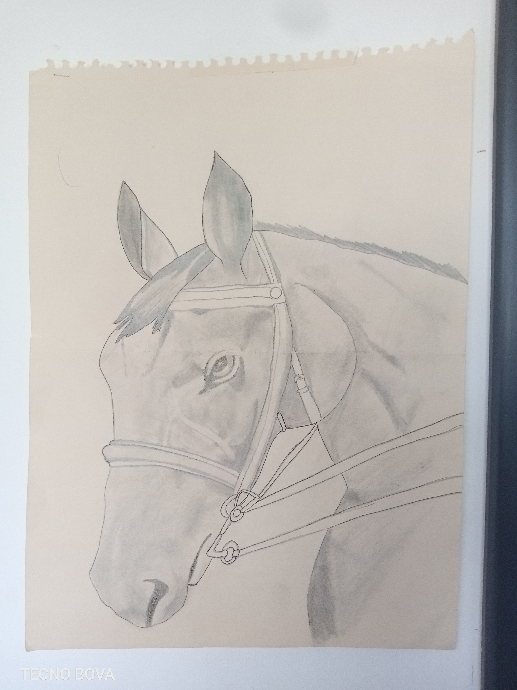

متجر إلكتروني متكامل لبيع العسل الطبيعي 100% ومنتجات المناحل في لبنان (حبوب اللقاح، الغذاء الملكي). زود المتجر بميزات طلب المنتجات، السلة التفاعلية، والبحث السريع لتوفير أسهل وأجمل تجربة للمستعمل.

تمثل هذه اللوحة دقة شديدة وبراعة في استخدام قلم الرصاص، الممحاة، وأداة التظليل لإبراز تفاصيل وجه ولجام الحصان.
"هذه الدقة والتركيز العالي في ضبط انحناءة خد الحصان والزوايا هي التمرين العملي الذي يصقل ثبات يدي ودقتها لتحقيق حلمي مستقبلاً كطبيب جراح."
دراسة علمية تسلط الضوء على السيارات التي تعمل بالهيدروجين والإيثانول، وتوضح كيف يمكن للكيمياء أن تحمي البيئة وتصنع مستقبلاً أفضل.